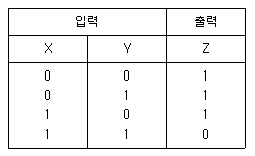

소방설비산업기사(전기) (2005-09-04 기출문제)
1과목: 소방원론
1. 화재시 발생하는 플래시오버 현상에 대한 설명으로 틀린 것은?
- 플래시오버 현상은 화재공간에 있는 가연물의 위치에 따라 나타나는 양상의 차이가 있다.
- 플래시오버 현상은 화재공간의 개구율과 관계가 있다.
- 플래시오버 현상은 화재공간에 있는 가연물의 양과 관계가 있다.
- 플래시오버 현상은 화재공간의 습도가 결정적인 영향을 미친다.
(정답률: 58%)

2. 건축물의 피난 동선 및 피난에 대한 설명으로 옳지 않은 것은?
- 피난동선은 가급적 단순, 명료한 형태가 좋다.
- 막다른 복도는 가능한 짧게 하는 것이 유리하다.
- 피난동선이란 복도, 계단, 엘리베이터 등 피난을 위한 이동수단을 말한다.
- 피난계단은 돌음계단으로 하여서는 아니된다.
(정답률: 73%)
3. 목재로 된 건축물이 화재가 발생하여 진화될 때 까지의 과정을 설명한 것 중 알맞은 것은?
- 무염착화 → 발염착화 → 최성기 → 연소낙하 → 진화
- 발화 → 무염착화 → 연소낙하 → 진화
- 발화 → 발염착화 → 무염착화 → 연소낙하 → 진화
- 발염착화 → 무염착화 → 발화 → 진화
(정답률: 52%)
4. 내화건축물의 화재 발생시 나타나는 화재 특성은?
- 저온단기형
- 저온장기형
- 고온단기형
- 고온장기형
(정답률: 63%)
5. 목조건축물의 화재원인과 직접적인 관련이 없는 것은?
- 접염
- 복사열
- 비화
- 대류열
(정답률: 41%)
6. 제1류 위험물로서 그 성질이 산화성고체인 것은?
- 셀룰로이드
- 금속분
- 아염소산염류
- 과염소산
(정답률: 71%)
7. 폭발을 일으킬 수 없는 물질은?
- 가연성가스
- 액체위험물
- 밀가루
- 시멘트가루
(정답률: 89%)
8. 다음 중 설치기준 및 목적이 고가차량(고가사다리차 또는 굴절차)과 직접적으로 관련이 있는 것은 어느 것인가?
- 옥내소화전설비
- 자동화재탐지설비
- 비상용승강기
- 가스계소화설비
(정답률: 79%)
9. 가연물이 연소할 때 연쇄반응을 차단하기 위하여는 공기중의 산소량을 일반적으로 몇 % 이하로 억제해야 하는가?
- 15
- 17
- 19
- 21
(정답률: 50%)
10. 불꽃연소의 특성이 아닌 것은?
- 작열연소보다 산화반응 속도가 크다.
- 연쇄반응이 일어난다.
- 작열연소보다 발열이 크다.
- 가연물 내부에서도 격렬한 연소가 진행된다.
(정답률: 36%)
11. 화재의 등급에서 E급에 해당하는 표시색은? (단, 가스화재이다.)
- 백색
- 황색
- 청색
- 무색
(정답률: 53%)
12. 화학열이라고 할 수 없는 것은?
- 연소열
- 분해열
- 압축열
- 용해열
(정답률: 77%)
13. 건축물의 피난계획에 대한 설명으로 옳지 않은 것은?
- 피난경로의 내장재 불연화
- 초고층 건축물의 경우 체류공간 확보
- 2방향 피난경로의 확보
- 비상용 엘리베이터 근접설치 및 적극적 활용
(정답률: 82%)
14. 화재의 증가 추세의 주요 원인이 아닌 것은?
- 플라스틱 등 가연성 물질의 대량 생산
- 새롭고 위험한 생산방법의 도입
- 방화구획된 건물의 증가
- 사회불안에 따른 방화의 증가
(정답률: 68%)
15. 할로겐화합물 소화약제의 특성이 아닌 것은?
- 비점이 비교적 낮다.
- 기화되기 쉽다.
- 인화점이 높아야 한다.
- 공기보다 무거워야 한다.
(정답률: 40%)
16. 실내화재에 있어서 플래시오버 시점에서의 실내 온도는 일반적으로 약 몇 ℃ 정도인가?
- 500~600
- 800~1000
- 1500~1600
- 2000~2100
(정답률: 60%)
17. LP가스의 공기에 대한 비중은 약 몇 배인가?
- 1.0~1.5배
- 1.5~2.0배
- 2.0~2.5배
- 2.5~3.0배
(정답률: 66%)
18. 다음 중 셀룰로이드 또는 폴리우레탄 등이 연소할 때 발생하는 연소 생성물로 옳은 것은?
- 시안화수소
- 아크릴로레인
- 질소산화물
- 암모니아
(정답률: 37%)
19. 다음의 소화원리 중 냉각효과에 의한 화학소화메카니즘은?
- 산림화재시 연소확대를 저지하기 위하여 맞불을 놓았다.
- 튀김기름이 타고 있을 때 신선한 야채를 넣었다.
- 알코올이 실험대 표면에서 타고 있을 때 실험복을 덮어 소화했다.
- 가연물의 활성성분을 산소와 반응하지 못하도록 염소브롬 등의 할로겐계 원소를 접촉 시켰다.
(정답률: 81%)
20. 상태의 변화없이 물질의 온도를 변화시키기 위해서 가해진 열을 무엇이라 하는가?
- 현열
- 잠열
- 비열
- 융해열
(정답률: 73%)
2과목: 소방전기회로
21. 서보전동기에 필요한 특징을 설명한 것으로 옳지 않은 것은?
- 정역회전이 가능하여야 한다.
- 직류용은 없고 교류용만 있다.
- 저속이며, 거침없는 운전이 가능하여야 한다.
- 급가속, 급감속이 용이하여야 한다.
(정답률: 75%)
22. 변압기 결선시 제3고조파가 발생하는 것은?
- △-△
- △-Y
- Y-△
- Y-Y
(정답률: 63%)
23. 시퀀스제어에 대한 설명으로 옳지 않은 것은?
- 논리회로가 조합되어 사용된다.
- 기계적 접점도 사용된다.
- 전체시스템에 연결된 접점들이 일시에 동작 할 수 있다.
- 시간지연요소가 사용된다.
(정답률: 70%)
24. 서보기구에서의 제어량은?
- 유량
- 위치
- 주파수
- 전압
(정답률: 61%)
25. 도체의 단면에 10C의 전하가 4초 동안 통과하였다면 이 도체에 흐른 전류의 크기는 몇 A인가?
- 2.5
- 5
- 10
- 20
(정답률: 73%)
26. 간선의 굵기를 정하는 데 고려되지 않는 것은?
- 배전율
- 부하용량
- 역률
- 수용률
(정답률: 36%)
27. 3상 유도전동기의 1차 권선의 결선을 △결선에서 Y결선으로 바꾸면 시동토크는 약 몇 %가 되는가?
- 25
- 30
- 33
- 35
(정답률: 66%)
28. 가동코일형 계기의 지시값은?
- 평균값
- 실효값
- 파형값
- 파고값
(정답률: 38%)
29. 어떤 콘덴서를 50Hz, 100V의 교류에 접속하면 10A의 전류가 흐른다고 한다. 이 콘덴서를 60Hz, 100V에 연결하면 몇 A의 전류가 흐르는가?
- 7
- 10
- 12
- 14
(정답률: 53%)
30. 전원전압을 안정하게 유지하기 위하여 사용되는 다이오드는?
- 보드형다이오드
- 터널다이오드
- 제너다이오드
- 바랙터다이오드
(정답률: 75%)
31. 맥동률이 가장 적은 정류방식은?
- 단상 반파식
- 단상 전파식
- 3상 반파식
- 3상 전파식
(정답률: 70%)
32. 어느 회로의 유효전력은 80W이고, 무효전력은 60Var이다. 이때의 역률 cosθ 의 값은?
- 0.8
- 0.85
- 0.9
- 0.95
(정답률: 56%)
33. 전압계의 측정범위를 5배로 하려면 배율기 저항은 전압계 내부저항의 몇 배로 하면 되는가?
- 4
- 6
- 8
- 10
(정답률: 60%)
34. 보일러의 자동연소제어가 속하는 제어 방식은?
- 비율제어
- 추치제어
- 추종제어
- 정치제어
(정답률: 43%)
35. 500W 전열기를 정격상태에서 10분 동안 사용한 경우의 발열량은 몇 kcal인가?
- 72
- 120
- 215
- 430
(정답률: 43%)
36. 다음 표와 같은 진가표의 Gate는?

- AND
- OR
- NAND
- NOR
(정답률: 57%)
37. 저임피던스 부하에서 고전류 이득을 얻으려고 할 때 사용되는 증폭 방식은?
- 그리드접지
- 베이스접지
- 이미터접지
- 컬렉터접지
(정답률: 52%)
38. 무선주파증폭에 복동조회로를 사용할 때 옳은 것은?
- 증폭도를 크게 높일 수가 있다.
- 왜곡을 줄일 수 있다.
- 전력 효율을 높일 수 있다.
- 선택도를 해치지 않고 대역폭을 넓게 할 수 있다.
(정답률: 55%)
39. 두 자기인덕턴스를 가극성으로 직렬접속하면 100mH이고, 감극성으로 직렬접속하면 40mH 이었다면, 이 두 코일의 상호인덕턴스는 몇 mH 인가?
- 5
- 10
- 15
- 20
(정답률: 42%)
40. 자체 인덕턴스가 20mH인 코일에 30A의 전류가 흐른 경우 축적된 에너지는 몇 J인가?
- 6
- 9
- 12
- 18
(정답률: 53%)
3과목: 소방관계법규
41. 소방본부장 또는 소방서장의 건축허가동의를 받아야 하는 범위로서 거리가 가장 먼 것은?
- 노유자시설의 경우 연면적이 200제곱미터 이상인 건축물
- 무창층이 있는 건축물로서 바닥면적이 150제곱미터 이상인 층이 있는 것
- 특정소방대상물 중 위험물 제조소 등 가스시설 및 지하구
- 차고·주차장으로 사용되는 층 중 바닥면적이 100제곱미터 이상인 층이 있는 시설
(정답률: 71%)
42. 소방청장, 소방본부장 또는 소방서장이 실시하는 소방특별조사의 서면통지일로 옳은 것은?
- 24시간 전
- 24시간 후
- 7일 전
- 7일 후
(정답률: 86%)
43. 다음 중 소방대상물에 해당하지 않는 것은?
- 산림
- 차량
- 선박건조구조물
- 철도
(정답률: 59%)
44. 한국소방안전협회의 업무가 아닌 것은?
- 소방기술과 안전관리에 관한 교육 및 조사 연구
- 소방기술과 안전관리에 관한 각종 간행물의 발간
- 소방용품에 대한 검사기술의 조사 연구
- 화재예방과 안전관리 의식의 고취를 위한 대국민 홍보
(정답률: 70%)
45. 방염대상품에 대한 방염성능기준으로 적합한 것은 어느 것인가?
- 불꽃에 의하여 완전히 녹을 때까지 불꽃의 접촉횟수는 3회 이상
- 버너의 불꽃을 제거한 때부터 불꽃을 올리며 연소하는 상태가 그칠 때까지 시간은 30초 이내
- 버너의 불꽃을 제거한 때부터 불꽃을 올리지아니하고 연소하는 상태가 그칠 때까지 시간은 20초 이내
- 탄화한 면적은 20제곱센티미터 이내, 탄화한 길이는 50센티미터 이내
(정답률: 38%)
46. 무창층의 요건으로서 거리가 먼 것은?
- 개구부의 크기는 지름 50센티미터 이상의 원이 내접할 수 있는 크기일 것
- 해당 층의 바닥면으로부터 개구부 밑부분까지 높이가 2미터 이내일 것
- 개구부는 도로 또는 차량이 진입할 수 있는 빈터를 향할 것
- 외부에서 쉽게 부수거나 열 수 있을 것
(정답률: 61%)
47. 다음 중 특정소방대상물의 구분 중 그 짝이 잘못된 것은?
- 근린생활시설 - 일반목욕탕
- 업무시설 - 소방서
- 의료시설 - 의원
- 위락시설 - 무도학원
(정답률: 33%)
48. 위험물의 임시저장 취급에 대한 설명으로 틀린 것은?
- 임시저장 취급의 기준은 시·도의 조례로 정한다.
- 임시저장 취급 기간은 60일 이내이다.
- 지정수량 이상의 위험물을 임시저장·취급할 경우 관할 소방서장의 승인을 받아야 한다.
- 군부대가 지정수량 이상의 위험물을 군사목적으로 임시저장·취급할 경우도 임시저장 할 수 있다.
(정답률: 67%)
49. 다음 중 화재의 원인 및 피해를 조사할 수 있는 조사권을 가진 자로 맞는 것은?
- 시·도지사 또는 소방본부장
- 소방본부장 또는 소방서장
- 소방본부장 또는 119 안전센터장
- 소방서장 또는 119 안전센터장
(정답률: 77%)
50. 다음 중 자동화재탐지설비를 설치하여야 하는 특정소방대상물이 아닌 것은?
- 복합건축물로서 연면적 600m2 이상인 것
- 지하구
- 길이 500m 이상의 터널
- 연면적 400m2 이상인 노유자시설인 것
(정답률: 47%)
51. 화재경계지구의 지정권자는?
- 소방본부장
- 시·도지사
- 소방서장
- 소방청장
(정답률: 77%)
52. 스프링클러설비를 설치하여야 하는 특정소방대상물로서 틀린 것은?
- 복합건축물 또는 교육연구시설 내에 있는 학생수용을 위한 기숙사로서 연면적 5000m2 이상인 경우에는 전층
- 층수가 11층 이상인 특정소방대상물의 경우에는 전층
- 정신의료기관 및 숙박시설이 있는 수련시설로서 연면적 500m2 이상인 경우에는 전층
- 지하가로서 연면적 1000m2 이상인 것
(정답률: 32%)
53. 전문소방시설공사업에서 주된 기술인력으로 소방설비 기사자격자는 기계분야와 전기분야로 구분하여 선임하는 데 각 몇 명 이상이어야 하는가?
- 기계분야 : 1명 이상, 전기분야 : 1명 이상
- 기계분야 : 2명 이상, 전기분야 : 2명 이상
- 기계분야 : 2명 이상, 전기분야 : 1명 이상
- 기계분야 : 1명 이상, 전기분야 : 2명 이상
(정답률: 60%)
54. 특수가연물에 해당하는 것은?
- 면화류：200kg 이상
- 대팻밥：300kg 이상
- 넝마：400kg 이상
- 가연성고체류：500kg 이상
(정답률: 63%)
55. 위험물안전관리자로 선임될 수 없는 자는?
- 위험물기능장
- 소방공무원으로 근무한 경력이 3년 이상인 자
- 안전관리자 교육이수자
- 소방시설관리사
(정답률: 28%)
56. 연면적 3만m2 이상 10만m2 미만인 특정소방대상물 또는 지하층을 포함한 층수가 16층 이상 30층 미만인 경우 공사현장에 배치되어야 하는 소방공사 감리원은?
- 특급소방감리원 1명 이상
- 고급소방감리원 1명 이상
- 중급 이상 소방감리원 1명 이상
- 초급 이상 소방감리원 1명 이상
(정답률: 35%)
57. 다음 중 소방특별조사 결과에 따른 조치명령에 따른 손실보상은 누가 실시하게 되는가?
- 행정안전부장관
- 시·도지사
- 소방본부장 또는 소방서장
- 시장·군수
(정답률: 77%)
58. 위험물은 1소요단위가 지정수량의 몇 배인가?
- 5배
- 10배
- 20배
- 30배
(정답률: 64%)
59. 주유취급소의 고정주입설비의 주위에는 주유를 받으려는 자동차 등이 출입할 수 있도록 너비 몇 m 이상, 길이 몇 m 이상의 콘크리트 등으로 포장한 공지를 보유하여야 하는가?
- 너비 20m 이상, 길이 5m 이상
- 너비 10m 이상, 길이 8m 이상
- 너비 15m 이상, 길이 6m 이상
- 너비 10m 이상, 길이 6m 이상
(정답률: 50%)
60. 다음은 손실보상과 관련된 내용이다. 틀린 것 하나를 고른다면?
- 손실보상에 관하여는 시·도지사와 손실을 입은 자가 협의하여야 한다.
- 보상금액에 관한 협의가 성립되지 아니한 경우에는 그 보상금액을 지급하거나 공탁하고 이를 알려야 한다.
- 손실을 보상하는 경우에는 공시지가로 보상 하여야 한다.
- 보상금의 지급 또는 공탁의 통지에 불복이 있는 자는 지급 또는 공탁의 통지를 받은 날 부터 30일 이내에 관할토지수용위원회에 재결을 신청할 수 있다.
(정답률: 62%)
4과목: 소방전기시설의 구조 및 원리
61. 백화점ㆍ대형점ㆍ쇼핑센타 및 영화상영관에는 보행거리 50m 이내마다 몇 개 이상의 휴대용 비상조명등을 설치하여야 하는가?
- 1개 이상
- 2개 이상
- 3개 이상
- 5개 이상
(정답률: 70%)
62. 자동화재속보설비의 속보기는 화재시에 화재속보를 계속해서 몇 회 이상 속보할 수 있어야 하는가?
- 1
- 2
- 3
- 5
(정답률: 66%)
63. 비상콘센트설비의 절연저항은 전원부와 외함 사이를 500V 절연저항계로 측정할 때 몇 MΩ 이상이어야 하는가?
- 10
- 20
- 30
- 50
(정답률: 66%)
64. 비상벨설비 부속회로의 전로와 대지 사이 및 배선 상호간의 절연저항은 1경계구역마다 직류 250V의 절연저항측정기를 사용하여 측정한 절연저항이 몇 MΩ 이상이 되어야 하는가?
- 0.1
- 0.2
- 0.3
- 0.5
(정답률: 79%)
65. 무선통신보조설비의 분배기, 분파기, 혼합기 등의 임피던스는 몇 Ω인가?
- 25
- 50
- 70
- 100
(정답률: 72%)
66. 다음은 무선통신보조설비의 정의에 대한 설명이 다. 맞지 않는 것은?
- “혼합기”란 한 개 이상의 입력신호를 원하는 비율로 조합한 출력이 발생하도록 하는 장치를 말한다.
- “분파기”란 서로 다른 주파수의 합성된 신호를 분리하기 위해서 사용되는 장치를 말한다.
- “분배기”란 신호의 전송로가 분기되는 장소에 설치하는 것으로 임피던스 매칭과 신호 균등분배를 위해 사용하는 장치를 말한다.
- “증폭기”란 신호 전송시 신호가 약해져 수신이 불가능해지는 것을 방지하기 위해서 증폭하는 장치를 말한다.
(정답률: 53%)
67. 비상방송설비의 화재신호를 수신한 후 필요한 용량으로 화재발생상황 및 피난에 유효한 방송이 자동으로 개시될 때까지의 소요시간은 얼마 이하로 하여야 하는가?
- 10초
- 20초
- 30초
- 60초
(정답률: 72%)
68. 다음은 유도등 설치에 관한 설명이다. 틀린 것은 어느 것인가?
- 객석유도등은 객석의 통로, 바닥, 벽 또는 천장에 설치한다.
- 객석유도등의 조도는 통로바닥의 중심선 0.5m 높이에서 측정하여 0.2 lx 이상이어야 한다.
- 복도통로유도등은 구부러진 모퉁이 및 보행거리 20m마다 설치할 것
- 피난구유도등은 상용전원으로 등을 켜는 경우 직선거리 30m의 위치에서 문자 및 색채를 쉽게 식별할 수 있어야 한다.
(정답률: 56%)
69. 비상방송설비를 구성하는 기기가 아닌 것은?
- 확성기
- 음량조절기
- 증폭기
- 감지기
(정답률: 71%)
70. 누전경보기의 전원은 분전반으로부터 전용회로로 하고 각 극을 개폐할 수 있는 몇 A 이하의 배선용 차단기를 설치하여야 하는가?
- 10
- 15
- 20
- 30
(정답률: 46%)
71. 비상콘센트설비의 전원회로의 연결이 옳은 것은 어느 것인가?
- 단상교류 220V, 1.5kVA
- 단상교류 110V, 3kVA
- 3상교류 200V, 1.5kVA
- 3상교류 220V, 3kVA
(정답률: 72%)
72. 누전경보기는 무엇으로 구성되어 있는가?
- 수신기와 발신기
- 변류기와 수신기
- 축전지와 변류기
- 수신기와 비상전원
(정답률: 61%)
73. 다음 감지기의 종류 중 자동화재탐지설비의 화재안전기준 제7조의 규정에 의하여 부착높이가15m 이상 20m 미만인 특정소방대상물에 설치할 수 있는 감지기의 종류로서 틀린 것은?
- 이온화식 1종
- 광전식 1종
- 연기복합성
- 차동식 스포트형
(정답률: 52%)
74. 자동화재속보설비의 스위치는 바닥으로부터 몇 m 높이에 설치하여야 하는가?
- 0.8m 이상 1.5m 이하
- 1.0m 이상 1.5m 이하
- 1.2m 이상 2.0m 이하
- 1.5m 이상 2.0m 이하
(정답률: 82%)
75. 도로터널의 경우 비상경보설비의 발신기는 측벽 길이 몇 m 이내마다 설치해야 하는가?
- 25m
- 40m
- 50m
- 60m
(정답률: 32%)
76. 제1종 또는 제2종 접지공사에 사용하는 접지선을 사람이 접촉할 우려가 있을 경우 다음과 같이 시설하는데 그 내용이 맞지 않는 것은?
- 정지극은 지하 75cm 이상의 깊이에 매설할 것
- 지중에서 그 금속체로부터 1m 이상 이격할 것
- 접지선은 절연전선 또는 케이블을 사용할 것
- 접지선은 지하 75cm로부터 지표상 1.5m까지의 부분은 합성수지관 등으로 덮을 것
(정답률: 56%)
77. 단독경보형감지기의 설치기준으로 옳지 않은 것은?
- 각실마다 설치할 것
- 최상층의 계단실의 천장에 설치할 것
- 바닥면적 150m2를 초과하는 경우에는 100m2마다 1개 이상 설치할 것
- 건전지를 주전원으로 사용하는 단독경보형 감지기는 정상적인 작동상태를 유지할 수있도록 건전지를 교환할 것
(정답률: 58%)
78. 감지기의 부착면과 실내바닥과의 거리가 2.3m이하인 곳으로서 일시적으로 발생한 열ㆍ연기 등으로 인하여 화재신호를 발신할 수 있는 장소에 설치할 수 있는 감지기는?
- 정온식 스포트형 감지기
- 정온식 감지선형 감지기
- 광전식 스포트형 감지기
- 이온화식 감지기
(정답률: 32%)
79. 사용자의 몸무게에 따라 자동적으로 내려올 수있는 기구 중 사용자가 연속적으로 사용할 수 없는 피난기구는?
- 피난사다리
- 완강기
- 간이완강기
- 구조대
(정답률: 74%)
80. 자동화재탐지설비의 수신기의 설치기준으로 틀린 것은?
- 4층 이상의 특정소방대상물에는 발신기와 전화통화가 가능한 수신기를 설치할 것
- 수위실 등 상시 사람이 근무하고 있는 장소에 설치할 것
- 감지기, 중계기 또는 발신기가 작동하는 경계구역을 표시할 수 있을 것
- 하나의 경계구역에 여러 개의 표시등 또는 여러 개의 문자로 표시되도록 할 것
(정답률: 62%)
플래시오버 현상은 화재공간에 있는 가연물의 위치, 개구율, 양 등 여러 가지 요인에 따라 나타나는 양상의 차이가 있다. 하지만 습도 역시 플래시오버 현상에 영향을 미치는 요인 중 하나이다. 습도가 높을수록 가연물의 증발이 어려워져서 플래시오버 현상이 발생할 가능성이 낮아진다. 따라서 "플래시오버 현상은 화재공간의 습도가 결정적인 영향을 미친다."라는 설명은 부분적으로 맞는 것이다.